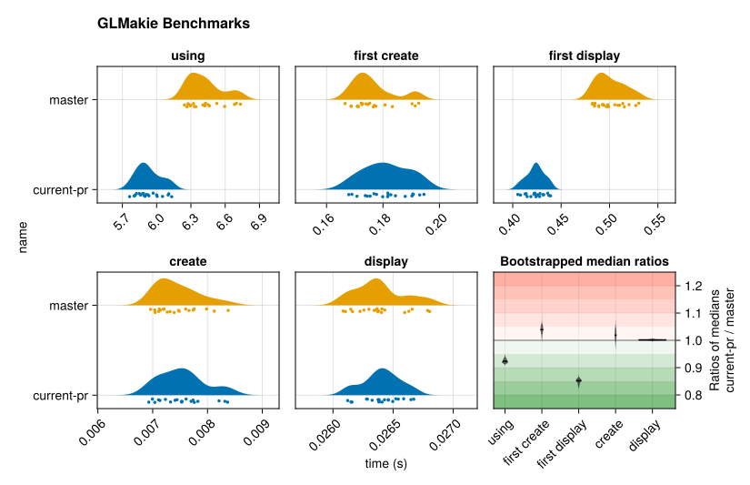
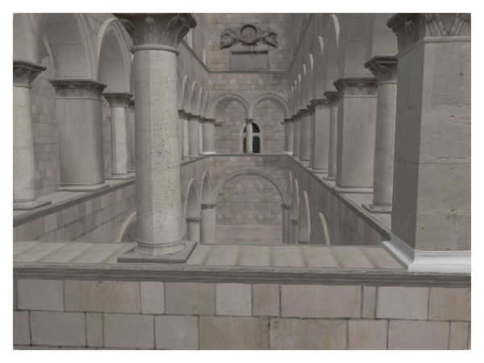
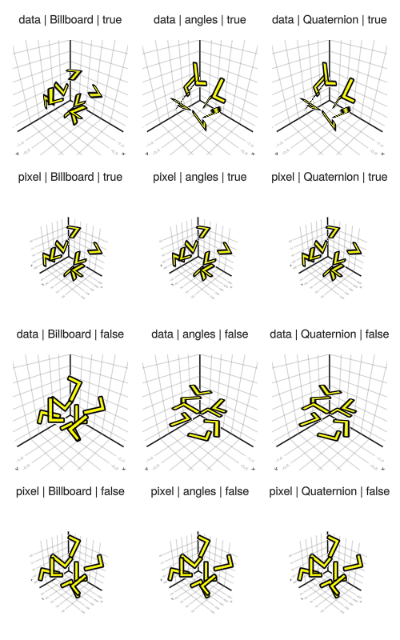
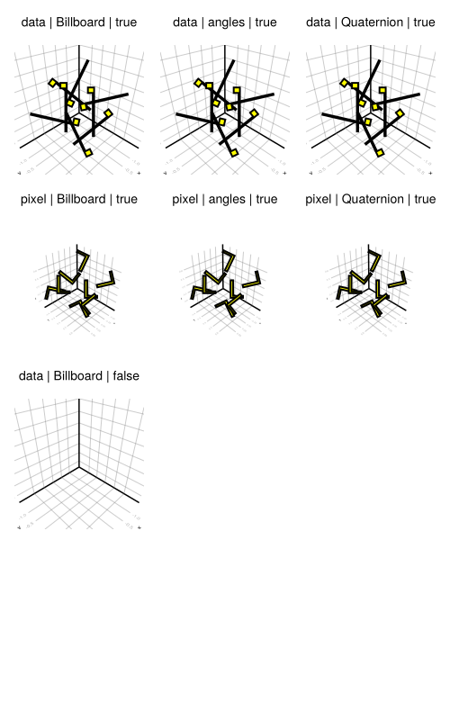
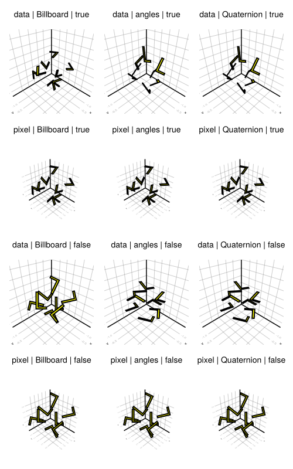
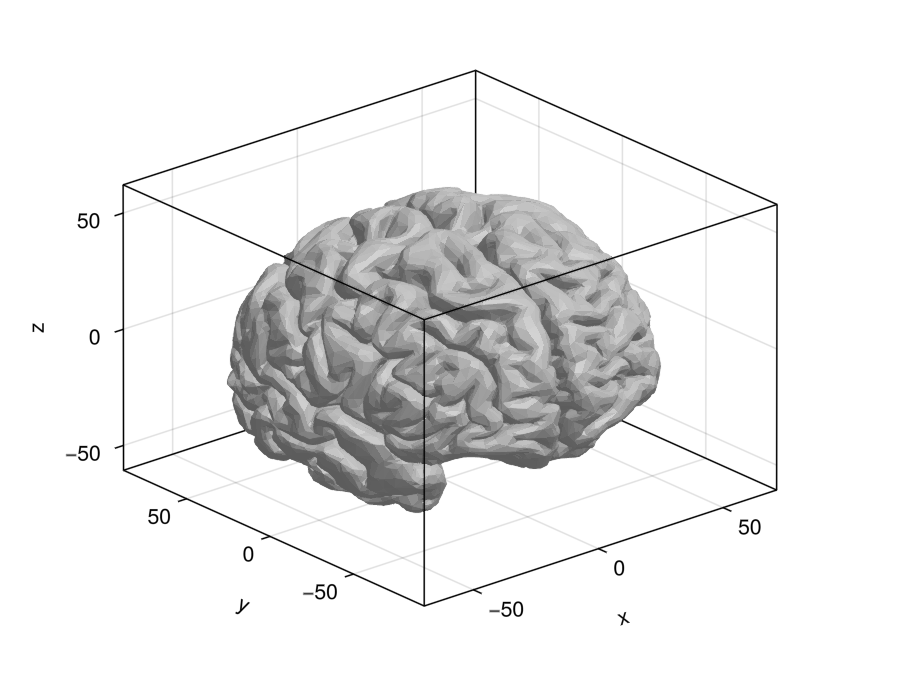
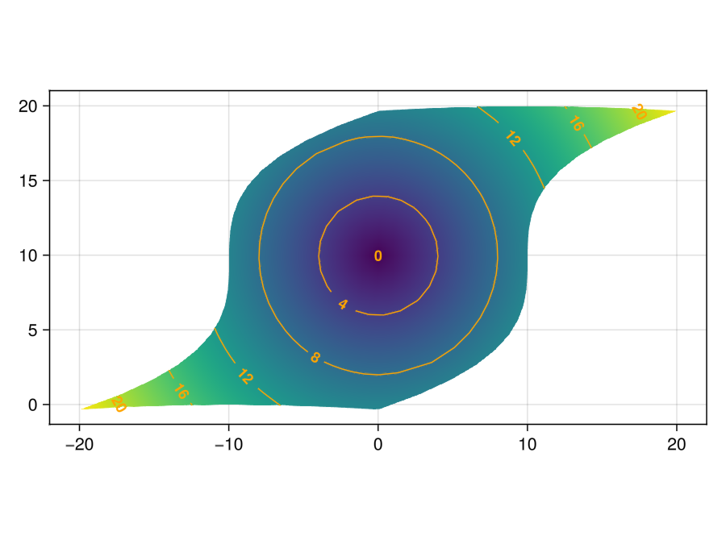
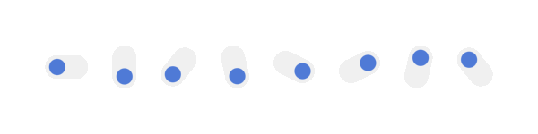
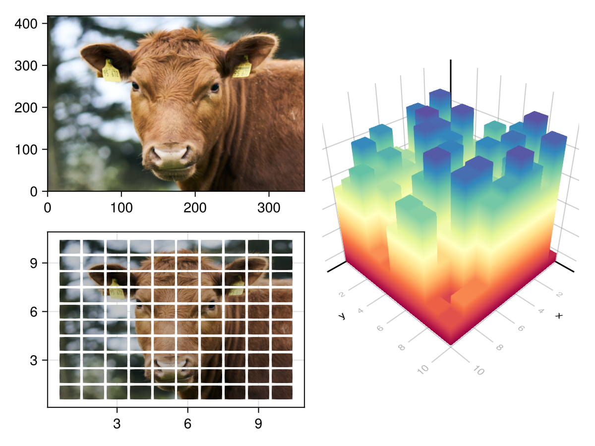
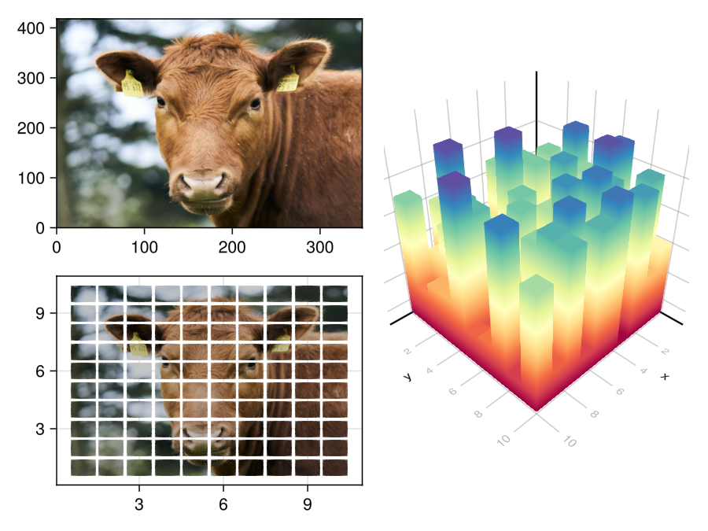

Makie v0.22
GeometryBasics 0.5
The largest part of this release is a refactor of GeometryBasics. The main goal was to simplify the package, both from a user perspective and a compiler perspective. Even if you don't interact with GeometryBasics directly, you should see some improvements to TTFP (specifically using and first display time).

Removed Meta
We removed the
meta infrastructure used for per-vertex and per-face data in GeometryBasics. It generated a lot of type complexity, which you may have noticed before if you looked at the full type of a mesh. Instead, a
GeometryBasics.Mesh now simply holds a
NamedTuple of array-like data, called
vertex_attributes. Each array is interpreted as per-vertex data.
A (raw) GeometryBasics mesh is now constructed as:
# old_mesh = GeometryBasics.mesh(meta(positions, normals = normals, uv = uvs), faces)
new_mesh = GeometryBasics.mesh(positions, faces, normal = normals, uv = uvs)
Note that
normals is now called
normal to match
uv.
FaceView
For per-face data, or more generally data which uses a different set of indices from other vertex attributes, we introduced the
FaceView object. It contains some data and a vector of faces which replaces the mesh's faces to index the data.
As an example, let's look at the mesh generated for
Rect3f, which wants per-face normals to avoid smooth shading across its edges and corners. (
facetype is only set to shorten the output a bit.)
julia> m = normal_mesh(Rect(0,0,0, 1,1,1), facetype = QuadFace{Int64})
Mesh{3, Float32, QuadFace{Int64}}
faces: 6
vertex position: 8
vertex normal: 6
The mesh has a different number of positions and normals. If we investigate further, we find that normals are represented by a
FaceView.
julia> m.normal
FaceView{Vec{3, Float32}, Vector{Vec{3, Float32}}, Vector{QuadFace{Int64}}}:
[-1.0, 0.0, 0.0]
[1.0, 0.0, 0.0]
[0.0, -1.0, 0.0]
[0.0, 1.0, 0.0]
[0.0, 0.0, -1.0]
[0.0, 0.0, 1.0]
The
FaceView contains 6 normal vectors as data, which is shown above. The number of normals the mesh reports refers to them. The
FaceView also contains 6 faces, which correspond to the 6 faces in the mesh.
julia> m.normal.faces
6-element Vector{QuadFace{Int64}}:
QuadFace{Int64}(1, 1, 1, 1)
QuadFace{Int64}(2, 2, 2, 2)
QuadFace{Int64}(3, 3, 3, 3)
QuadFace{Int64}(4, 4, 4, 4)
QuadFace{Int64}(5, 5, 5, 5)
QuadFace{Int64}(6, 6, 6, 6)
Each of these faces refers to just one index in
m.normal.data, making that data apply per face.
You can convert a mesh with
FaceViews to one without by calling
expand_faceviews(mesh). This will directly return the mesh if it does not contain
FaceViews. Otherwise, it will build a new mesh without them, remapping indices and separating faces as needed.
julia> expand_faceviews(m)
Mesh{3, Float32, QuadFace{Int64}}
faces: 6
vertex position: 24
vertex normal: 24
To combine the per-face normals with positions, our mesh requires 3 copies of each position (one per face using that position) and 4 copies of each normal (one per vertex in the face). These are generated by
expand_faceviews(m).
Note that we also added a convenience function
face_normals(points, faces) to GeometryBasics to generate a
FaceView for per-face normals. In the docs, you can also find an example of how to use
FaceView to set per-face colors.
MetaMesh & MeshIO
We have introduced a
MetaMesh type, which allows you to bundle arbitrary data with a
GeometryBasics.Mesh. Any data (that does not correspond to vertices or faces) can be shipped with this type. It is now used by MeshIO when loading an
obj file that includes a material template library (i.e., an .mtl file).
julia> using FileIO, Makie
julia> m = load(Makie.assetpath("sponza/sponza.obj"))
MetaMesh{3, Float32, NgonFace{3, OffsetInteger{-1, UInt32}}}
faces: 66450
vertex position: 60848
vertex uv: 60896
meta: [:groups, :material_names, :materials]
The material data ends up in
m[:materials] as a nested
Dict, where the first key is the name of the material. The names are also listed in
m[:material_names] in the same order they are referred to by the
.obj file. The mesh contains a new
m.mesh.views field, which marks the subset of faces affected by each material.
m[:groups] is also synchronized with
m.mesh.views, containing the group names of these faces.
Makie can directly plot a
MetaMesh as it is constructed by
MeshIO, applying the material properties it knows how to handle. This includes textures referred to by the mtl file.
using FileIO, GLMakie
m = load(Makie.assetpath("sponza/sponza.obj"))
f,a,p = Makie.mesh(m)
display(f)
update_cam!(a.scene, Vec3f(-15, 7, 1), Vec3f(3, 5, 0), Vec3f(0,1,0))
Note that Makie can currently only handle a very limited subset of the material properties an mtl file can set. As such, the results may differ from what the mtl file sets and will improve in the future.

Axis3 Controls
With version 0.22, we have introduced a few new controls to Axis3:
Translation
The content of an Axis3 can be translated by holding the right mouse button and dragging. Any content that spills outside the frame of the axis will be clipped. Translations can be restricted to a specific dimension by holding the x, y, and/or z key while translating. If
viewmode = :free, you can also translate the whole Axis3 (content + decorations) by holding left control while translating.
Zoom
The content of an Axis3 can be zoomed by scrolling the mouse wheel. By default, zoom is focused on the center of the axis. This can be changed to be focused on the cursor by setting
ax.zoommode[] = :cursor. Like with translations, content outside the frame is clipped, and the x, y, and/or z key can be used to restrict zooming to specific dimensions. If
viewmode = :free, zooming always affects the whole Axis3 (content + decorations) and is always focused on the center of the axis.
Limit Reset
The limit reset works similarly to Axis. By pressing left control and the left mouse button, limits are reset to the previously set user limits or, if none exist, default limits. Adding left shift results in a full reset, removing user limits if any exist. In the context of Axis3, the former resets zoom and translation of axis content. The latter also resets rotation and translation of the whole Axis3. The latter can also be activated without the former by just pressing left shift and the left mouse button.
Focus on Cursor
You can center the Axis3 on the data under the cursor by pressing left alt and the left mouse button. With
zoommode = :center (or
viewmode = :free), this will translate that data point in such a way that you can zoom towards it without clipping into it.
Smaller Changes
Scatter marker_offset behavior change
In previous versions,
marker_offset was used to center scatter markers, but it could also be set by the user to specify some other offset. This was somewhat confusing as
marker_offset = Vec2f(0) did not result in a centered marker. It also did not work with
BezierPath markers, which have become the default.
In this release, we separated the centering into an internal attribute, so that
marker_offset is a pure user attribute. With this,
marker_offset = 0 now results in the same centered marker as not specifying it would. It also now works consistently for all marker types and is no longer affected by the
rotation attribute.
MeshScatter transform_marker
Scatter has a
transform_marker::Bool attribute which controls whether the model matrix (i.e.,
translate!(),
rotate!(),
zoom!()) affects the marker.
MeshScatter now also has this attribute. It is set to
false by default, which changes the behavior from the previous version. Most notably, this will affect the shape of meshscatter objects in an Axis3. Where previously they were scaled based on the limits of the Axis, they now preserve their shape and size.
CairoMakie
We have cleaned up two rendering pipelines in CairoMakie. The first is the meshscatter/voxel/surface/mesh pipeline. It previously handled transformations incorrectly, always applying
transform_func and
model to (generated) mesh vertices. This is correct for
mesh and
surface but not
meshscatter and
voxel. It also didn't allow for meshes without normals.
The second is the
scatter pipeline. It was previously built with
markerspace = :pixel in mind, which caused various rendering issues when
markerspace != :pixel,
transform_marker != false, and/or
rotation was involved. These issues include silent corruption of Cairo state which causes no more plots to be drawn. These issues have now been resolved, and you should get the same results from CairoMakie as you get from GLMakie and WGLMakie when these attributes are involved. (Up to some smaller differences due to perspective projection in 3D.)
| GLMakie | CairoMakie before | CairoMakie after |
|---|---|---|
|  |  |  |
Front Spines in Axis3
Introduces an option to close an Axis3's outline box with a new
front_spines feature, enhancing the visualization of 3D plots by drawing the box spines in front.
using GLMakie, FileIO
fig = Figure()
brain = load(assetpath("brain.stl"))
ax = Axis3(fig[1, 1], front_spines = true) # see also x/y/zspinecolor_4
mesh!(ax, brain, color = :gray80)
fig

Enable Curvilinear Contour Plots
Curvilinear contour plots are enabled using Contour.jl's capabilities, now supporting grids for more flexible contour visualizations:
using GLMakie
x = -10:10
y = -10:10
# The curvilinear grid:
xs = [x + 0.01y^3 for x in x, y in y]
ys = [y + 10cos(x/40) for x in x, y in y]
zs = sqrt.(xs .^ 2 .+ (ys .- 10) .^ 2)
levels = 0:4:20
fig, ax, srf = surface(xs, ys, fill(0f0, size(zs)); color=zs, shading = NoShading, axis = (; type = Axis, aspect = DataAspect()))
ctr = contour!(ax, xs, ys, zs; color = :orange, levels = levels, labels = true, labelfont = :bold, labelsize = 12)
fig

Backlog
Fix Screen Re-opening Issue
Implements screen reusability by using
empty! instead of closing and reopening, solving a window behavior issue on Linux when reusing GLMakie's singleton screen.
Toggle Rotation
Version 0.21.17 added the ability to rotate
Toggle blocks using the
orientation attribute.
using GLMakie
f = Figure(size = (400, 100))
Toggle(f[1, 1], orientation = :horizontal) # default
Toggle(f[1, 2], orientation = :vertical)
for i in 3:8
Toggle(f[1, i], orientation = (i-2) * 2pi/7)
end
f

Picking Improvements
Since the last breaking release we merged a bunch of fixes for picking in WGMakie and GLMakie. We added tests and also updated the indices produced for image, heatmap and surface plots to correspond to the matrix indices of the given data.
#4082, #4136, #4137, #4459, #4488, #4604
Tick Event
In version 0.21.6 we introduced
events(fig).tick. The event triggers once per frame in GLMakie, CairoMakie, and
record(), and on a timer in WGLMakie. It can be used for anything that should happen synchronized with rendering, e.g., animation. The tick event contains the number of frames rendered
tick.count, the time since rendering started
tick.time, and the time since the last tick
tick.delta_time.
uv_transform
In version 0.21.6 we added the
uv_transform attribute to
image,
surface,
mesh, and
meshscatter. It acts as a transformation matrix on texture coordinates similar to how model transforms coordinates. The attribute accepts 2x3 and 3x3 matrices (which will get truncated to 2x3), a
Symbol for named transformations,
LinearAlgebra.I, a
Vec2f representing scaling, a
Tuple{Vec2f, Vec2f} representing translation and scaling, or a tuple containing multiple operations which will get chained (last operation applies first). See
?Makie.uv_transform for more information.
using LinearAlgebra, GeometryBasics, FileIO, GLMakie, ColorSchemes
cow = load(assetpath("cow.png"))
f = Figure()
image(f[1, 1], cow, uv_transform = :transpose)
meshscatter(
f[2, 1], [Point2f(x, y) for x in 1:10 for y in 10:-1:1],
color = cow, # first (translate, scale), then :transpose
uv_transform = [(:transpose, (Vec2f(x, y), Vec2f(0.1, 0.1))) for x in 0.0:0.1:0.9 for y in 0.0:0.1:0.9],
markersize = Vec3f(0.9, 0.85, 1),
marker = uv_normal_mesh(Rect2f(-0.5, -0.5, 1, 1))
)
texture = reshape(get(colorschemes[:Spectral_11], 0:0.01:1), 101, 1)
# create fitting mesh
r = Rect3f(Point3f(-0.5, -0.5, 0), Vec3f(1, 1, 1))
uvs = [Vec2f(p[3], 0) for p in coordinates(r)]
rect_mesh = GeometryBasics.mesh(r, normal = normals(r), uv = uvs)
z = rand(10,10)
meshscatter(
f[1:2, 2], [Point3f(i, j, 0) for i in 1:10 for j in 1:10],
markersize = Vec3f.(1, 1, 10z[:]),
uv_transform = Vec2f.(z[:], 1), # scale only
marker = rect_mesh, color = texture, shading = NoShading
)
f

Pie Position and Radial Offsets
In version 0.21.6 an optional position argument and the
offset_radius attribute were added to pie plots. The position argument can be used to translate the whole plot or each sector individually and the
offset radius can be used to translate sectors along radial direction.
fig = Figure(size = (400, 400))
ax = Axis(fig[1, 1]; autolimitaspect=1)
vs = cumsum(4:10) ./ 35
off = [0, 0.3, 0, 0, 0.2, 0.0, 0.0]
cs = Makie.wong_colors()
pie!(ax, vs; color=cs, normalize=false)
pie!(ax, Point2f(2.5, 0), vs; color=cs, offset_radius=off, normalize=false, offset=π/2)
pie!(ax, 0, -2.5, vs; color=cs, normalize=false, offset=π/2, inner_radius=0.3)
xs = 2.5 .+ [0.0, 0.0, -0.2, -0.2, -0.2, 0.0, 0.2]
ys = -2.5 .+ [0.2, 0.2, 0.2, 0.0, 0.0, -0.2, 0.0]
pie!(ax, xs, ys, vs; color=cs, normalize=false, offset=π/2, inner_radius=0.3)
fig

Line Loops
After reworking our line shaders in 0.21, we added code for rendering closed line loops in version 0.21.4. If the start and end point of a line is the same and it has at least 4 points, it is detected as a loop. In that case, the line doesn't draw a linecap at the start and end point, but instead another joint, closing the loop.